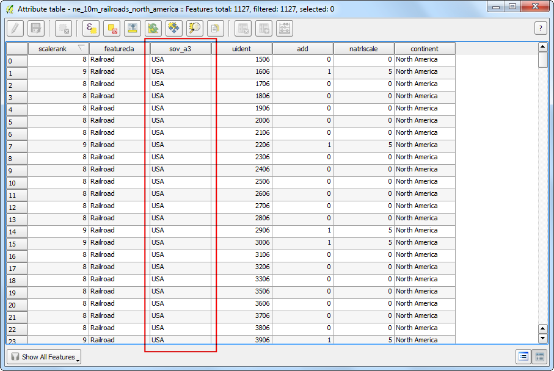
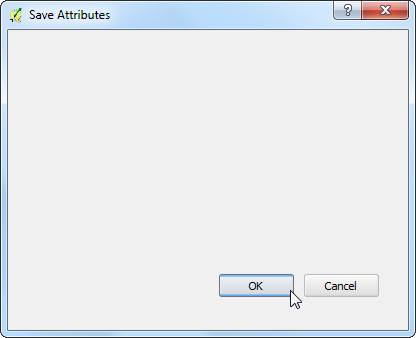
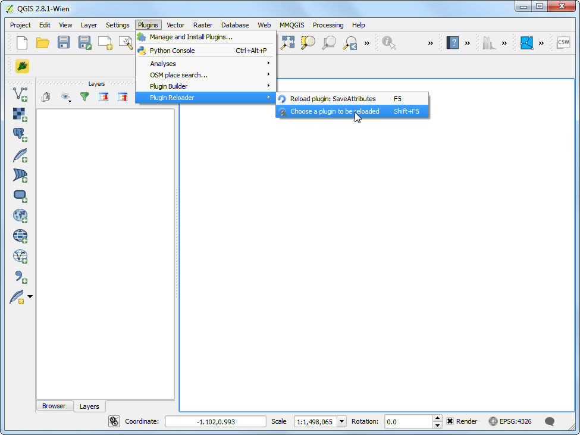
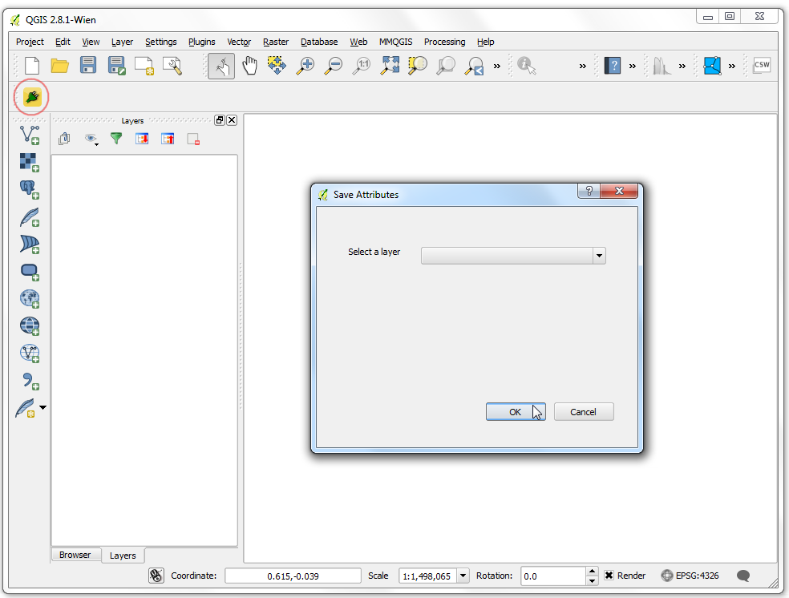

프로세싱 프레임을 이용한 일괄처리과정
[ Download PDF
A4
Letter ]
QGI 2.0은 Processing Framework**라는 새로운 개념을 도입했습니다. 전에는 **Sextante,로 알려져 있던 것인데, 프로세싱 프레임워크는 QGIS에서 데이터 처리를 위해 토착형 그리고 제 3 자형 알고리즘을 구동할 수 있는 환경을 제공합니다. 이것은 여러개의 레이어에 대해 쉽게 알고리즘을 실행할 수 있도록 괜찮은 일괄처리 과정 인터페이스를 포함하고 있습니다. 일괄처리 과정은 수동적인 노력을 절감하고 반복적인 작업을 자동적으로 수행할 수 있도록 해주는 유용한 툴입니다.
과업 개요
단일 일괄처리 명령하에서 몇몇 전지구적 벡터 레이어를 사용하여 아프리카의 범위로 잘라내기를 할 것입니다.
과정
메뉴 레이어 –> 레이어 추가 –> 벡터 레이어 추가 :menuselection:`Layer –> Add Vector Layer`로 갑니다.

다운로드 한 Admin 0 Countries shapefile ne_10m_admin_0_countries.shp 을 찾아서 열기 :guilabel:`Open`를 클릭합니다.

예제에서 전 지구 레이어를 아프리카 경계로 잘라내어야 하므로 전체 대륙 폴리곤을 포함하고 있는 레이어를 준비할 필요가 있습니다. 나라 데이터가 포함된 레이어는 **CONTINENT**라는 하는 속성을 가지고 있습니다. 모든 나라들은 같은 대륙값을 가지고 있으므로 병합을 하기 위해서 디졸브 *Dissolve*라는 공간연산 개념을 사용하여 하나의 폴리곤으로 병합할 수 있습니다.

메뉴 벡터 –> 공간연산도구 –> 디졸브 툴을 엽니다.

입력 벡터 레이어 Input vector layer`로 ``ne_10m_admin_0_countries``를 선택합니다. 필드 병합 :guilabel:`Dissolve field`은 ``CONTINENT``로 합니다. 출력 Shape 파일은 ``continents.shp``로 입력하고 결과를 캔버스에 추가 :guilabel:`Add result to convas 옆 박스를 체크합니다.
주석
만약 속성에 상관없이 ALL 폴리곤을 병합하고자 한다면 필드 병합 Dissolve field`에 모두 디졸브 :guilabel:– Dissolve All –`를 선택합니다. 이것은 레이어에서 모든 폴리곤을 합칠 것이고 하나로 합쳐진 폴리곤이 만들어 질 것입니다.

디졸브 처리에는 시간이 걸릴 것입니다. 일단 과정이 종료되면 새로운 ``continent``레이어가 QGIS에 추가되는 것을 볼 수 있습니다. 툴바에서 단일 클릭이나 영역으로 객체 선택 :guilabel:`Select Single Feature`을 사용하여 대륙을 대표하는 폴리곤으로 아프리카를 클릭합니다.

``continents``레이어를 우측클릭하고 다른 이름으로 저장 :guilabel:`Save Selection As...`을 선택합니다.

출력파일로 ``africa.shp``를 입력합니다. 여기서는 다른 어떤 속성이 아닌 단지 대륙만을 다룰 것이므로 속성 생성 생략 Skip attribute creation`에 체크를 합니다. 저장된 파일을 지도에 추가 :guilabel:`Add saved file to map 박스가 체크되어 있는지 확인하고 확인 :guilabel:`OK`을 클릭합니다.

전체 대륙에 대해 하나의 폴리곤을 포함하고 있는 africa 레이어가 QGIS에 불러들여질 것입니다. 이제 자르기 과정을 일괄처리할 때가 되었습니다. 메뉴 처리 –> 툴박스 :menuselection:`Processing –> Toolbox`를 엽니다.

모든 가능한 알고리즘을 찾아보고 메뉴 :menuselection:`QGIS geoalgorithms –> Vector overlay tools –> Clip`에서 :guilabel:`Clip`을 찾습니다. 알로리즘을 쉽게 찾기위해 검색 :guilabel:`Search`박스를 사용할 수 도 있습니다.

Clip 알고리즘을 우측클릭하고 일괄작업으로 수행 :guilabel:`Execure as batch process`을 선택합니다.

배치 처리 Batch Processing 다이알로그에서 첫번재 탭은 입력을 결정하는 Parameters`입니다. :guilabel:`Input layer 에서 첫번째 행 옆에 있는 ... 를 클릭합니다.

다운로드한 전세계 교통레이어를 포함하고 있는 디렉토리를 찾습니다. 컨트롤 :kbd:`Ctrl`키를 누른 채 잘라내기를 할 모든 레이어를 선택합니다. 쉬프트 :kbd:`Shift`키 혹은 컨트롤 A :kbd:`Ctrl-A`키도 다중선택을 할 수 있을겁니다. 열기 :guilabel:`Open`를 누릅니다.

Input layer 열은 선택한 레이어로 자동적으로 채워지는 것을 알게될 것입니다. 추가로 행을 추가하고 보다 많은 입력레이어를 결정하기 위해 행추가 Add row 단추를 사용할 수 있습니다. 다음,입력 레이어를 잘라내기 위해 경게를 포함하는 레이어를 선택할 필요가 있습니다. 첫번째 행의 ...`단추를 클릭하고 :guilabel:`Clip layer`로 ``africa.shp``를 추가합니다. 잘라내기 레이어가 모든 같은 입력레이어이므로 :guilabel:`Clip layer`의 헤더를 더블클릭하면 같은 레이어가 모든 행에 자동적으로 채워집니다. 다음, 출력을 결정할 필요가 있습니다. :guilabel:`Clipped`열에서 첫번째 행 옆의 :guilabel:...` 단추를 누릅니다.

출력 레이어를 저장할 디렉토리를 탐색하십시오. 파일명으로 ``clipped_``를 입력하고 저장 :guilabel:`Save`을 누릅니다.

새로운 자동채움설정 Autofill settings 다이알로그가 나타나는 것을 보게될 것입니다. 자동채움 모드 :guilabel:`Autofill mode`로 파라미터값으로 채움 :guilabel:`Fill with parameter values`를 선택합니다. :guilabel:`Input layer`로 사용할 파라미터 :guilabel:`Parameter to use`를 선택합니다. 이러한 설정은 앞서 명시한 ``output_``파일명에 이어 붙인 입력파일명이 추가될 것입니다. 이것은 모든 출력 파일이 유일한 이름을 가질 수 있고 서로 중복되지 않도록 확실하게 한다는 측면에서 중요합니다.

이제 일괄처리를 시작한 준비가 되었습니다. :guilabel:`Run`을 누릅니다.

잘라내기 알고리즘은 각각의 입력에 대해 구동하고 명시했던 출력파일을 만들어 낼 것입니다. 일다 일괄처리가 완료되면 QGIS 캔버스에 레이어들이 추가될 것입니다. 아는 바와 같이 모든 세계 레이어들은 앞서 보여줬던 대륙경계에 맞게 절절하게 잘라내기가 되어 있습니다.
